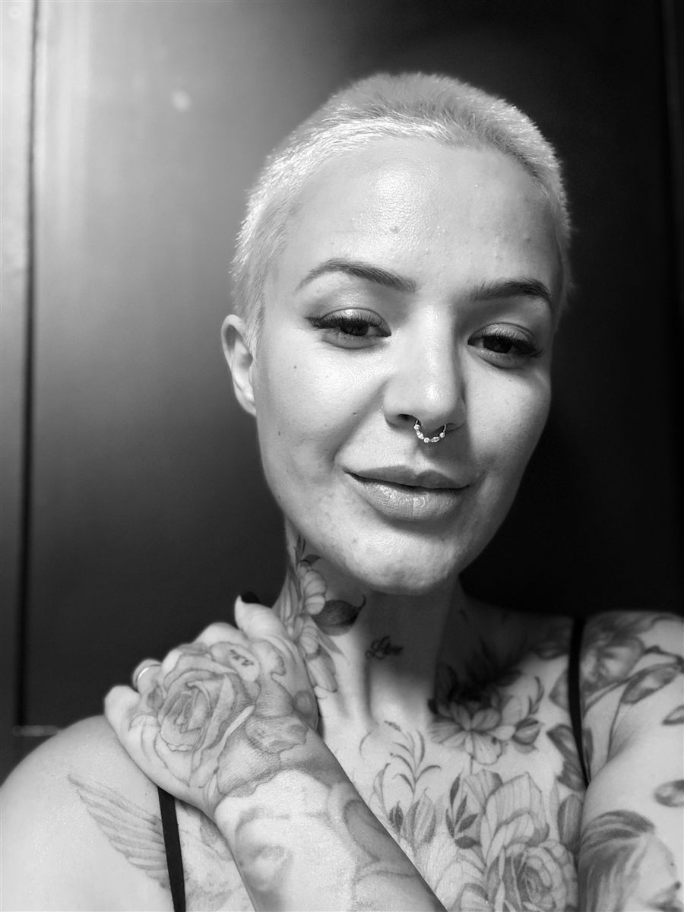

Sobre a Marta
A artista por trás da La Loba Ink.

Sou a Marta Loba, a artista por trás da La Loba Ink. Trabalho com traço fino, flores e microrealismo, e também com realismo e lettering. Cada desenho é exclusivo, pensado para o teu corpo e para a tua história.
A loba representa força, instinto e liberdade. É com essa energia que recebo cada pessoa: com calma, escuta e cuidado em cada detalhe.
“A tua história, a minha arte.”
- 5estilos
- 100%desenhos exclusivos
- 2.300+seguidores